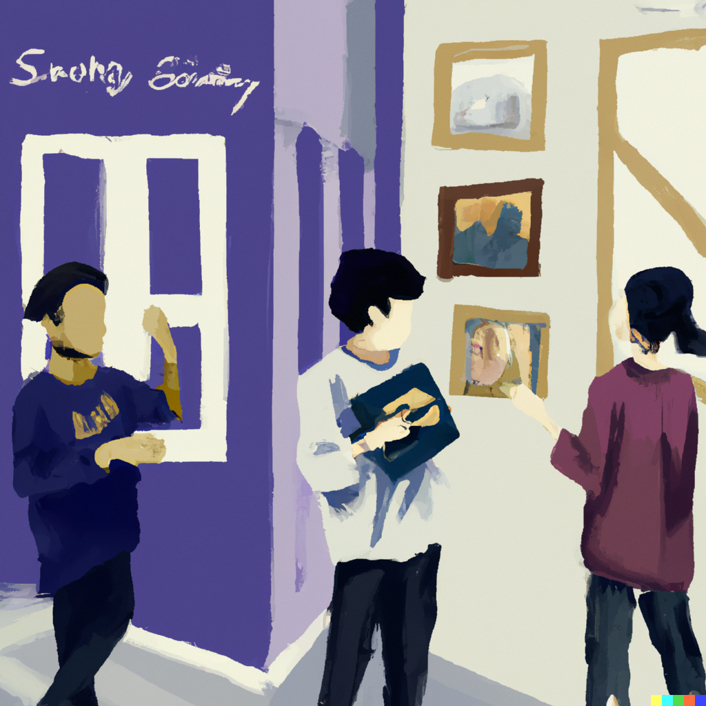
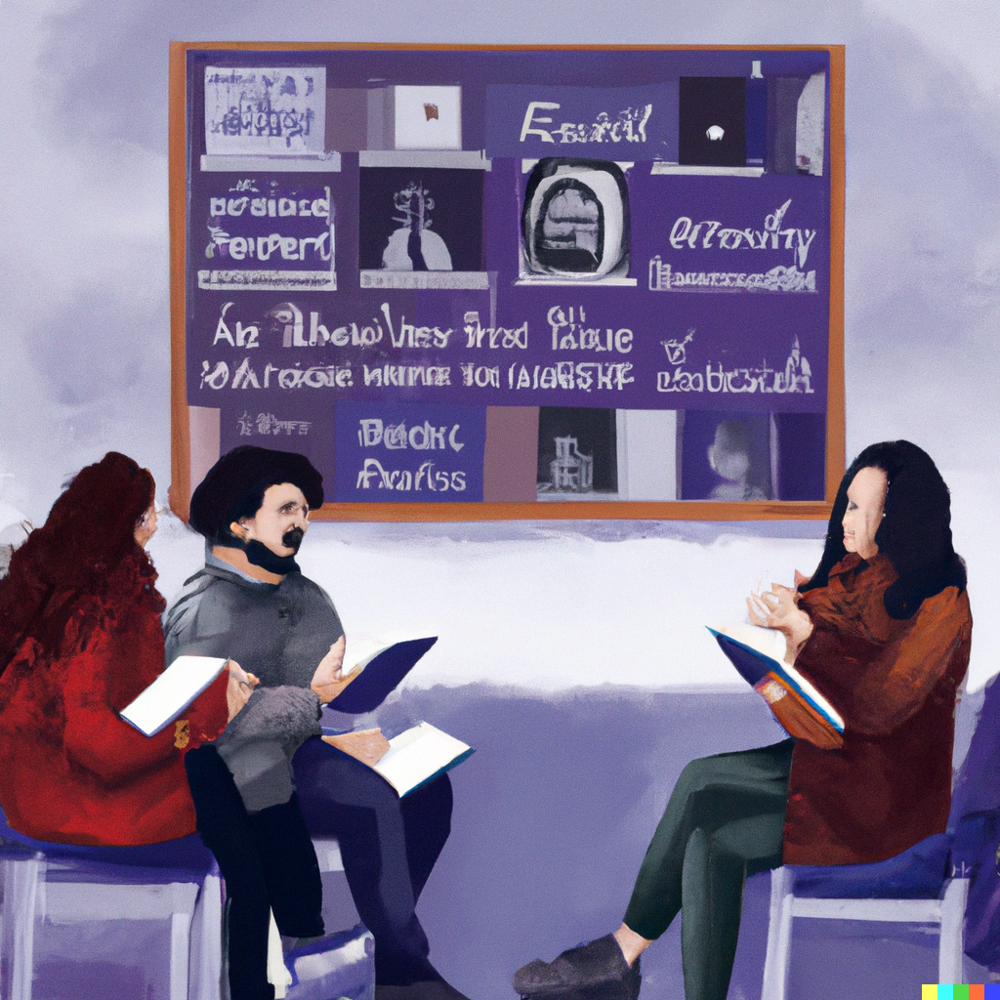
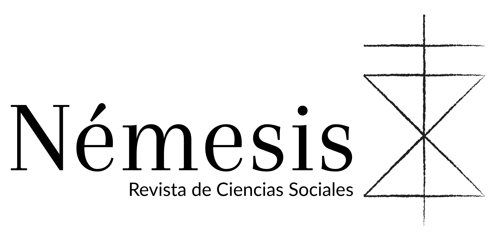

Proyecto
¿Qué es Némesis?
Némesis es una Revista de estudiantes de la Facultad de Ciencias Sociales de la Universidad de Chile. Esta se configura como espacio de discusión de problemáticas sociopolíticas contemporáneas, ligando la formación disciplinar con el ejercicio de reflexionar acerca de nuestra sociedad. En este sentido, si bien halla sus raíces en la Escuela de Sociología, extiende sus ramas hacía el amplio espectro del pensamiento social.
La Revista Némesis nace en 1998 del esfuerzo de estudiantes de la Facultad de Ciencias Sociales de la Universidad de Chile. En el proceso de formación disciplinar, para aquellos estudiantes fueron visibles las miserias presentes en las ciencias sociales heredadas de la dictadura, y la necesidad y el deseo se conjugaron para repensar las condiciones de producción del pensamiento. Fue el pensamiento pensándose a sí y a sus condiciones.

En la Revista Némesis comprendemos que, para interpelar, para polemizar, no basta con vociferar, sino que hay que ejercer una práctica crítica de las actuales formas de pensar lo social. Es una crítica que se realiza en la praxis. Así es como se nos describe a Némesis, la diosa griega de la venganza, quien, libre de los influjos del olimpo, actúa con justicia cuando esta no aparece. Némesis interviene sobre los asuntos humanos, recordándole a estos que son humanos y que sus desequilibrios son castigados. En este sentido, la preocupación por las problemáticas sociopolíticas contemporáneas de nuestras sociedades ha sido transversal en estas más de dos décadas de vida.
Las miserias siguen presentes. La justicia y libertad son una necesidad. Némesis está presente.
La Revista Némesis cuenta con una fuente estable de financiamiento, aportada por el Departamento de Sociología de la Facultad de Ciencias Sociales de la Universidad de Chile, lo cual permite dar continuidad a la publicación de los distintos números de la revista y a sus proyectos.
Las publicaciones de Némesis se circunscriben a investigaciones empíricas, ensayos teóricos, reseñas bibliográficas, entrevistas, notas de investigación, columnas de opinión y coloquios que interpelen las circunstancias de lo social.
Visión 2023
Todo estudiante que haya entrado a sociología UCh hace unos 6 o 7 años conoce la Revista Némesis. Se trata de un artefacto que tienen los jóvenes de la facultad para emprender sus primeros pasos en la escritura y publicación de reflexiones, investigaciones y aportes al debate público en Chile. Sin dudas, es un espacio que entrega la oportunidad de desplegar sus ideas a quienes recién están germinando los primeros frutos de su paso por las Ciencias Sociales.
Desde finales de los años 90’s que Némesis se encuentra acumulando números de edición, donde alberga un montón de escritos históricos provenientes de autores que hoy se están consolidados en el mundo político e intelectual en Chile. El valor de la Revista no se fundamenta solo en la activación del debate académico entre estudiantes de la Facultad, sino también en la formación de sujetos curiosos, críticos y motivados para defender ideas y sus puntos de vista, en vistas de liderazgos que tendrán que asumir en el futuro.
Ahora bien, como cualquier institución social en tiempos contemporáneos, Némesis no escapa de la condición líquida e incierta de su funcionamiento. Como no se trata de una revista periódica, la publicación de números depende de la solidez del equipo de trabajo que por detrás esté sustentando la revista.
En el último tiempo (digamos, en los últimos dos años), Revista Némesis se encuentra en una especie de “hiatus”, esto quiere decir que las condiciones de organización interna de la Revista han vuelto difícil elaborar un nuevo número de edición. Por asuntos que tienen que ver con la falta de tiempo de los miembros antiguos del Comité Editorial, así como el ausente proceso de renovación del mismo en los últimos años, Némesis se encuentra descontinuada. Desde finales de 2021 que no existía un equipo de trabajo que lleve a flote la revista, lo cual ofrece el desafío a las nuevas generaciones de la facultad de volver a despertar un aspecto tan importante de la carrera para el rico desenvolvimiento de las ideas estudiantiles.
Y se dice “despertar” (y no “reactivar”) por una razón en particular. Pese a que Nemesis ha publicado cinco números en los últimos seis años, la impresión del equipo actual es que la revista ha perdido su sentido original. En su primera edición, la revista partía su presentación con la siguiente cita:

“Némesis busca ser una revista académica de carácter controversial (…) La pregunta aquí no sólo es qué hace la sociología, sino por qué y cómo lo hace (…) Némesis, pensamos, debe aportar al rebase de una compartimentalización ortodoxa entre disciplinas que tienen su origen en una currícula institucional planteada para la sociedad del siglo pasado”
La intención era clara: Desprenderse de los dogmas institucionales de la academia convencional, para entregar a la facultad, y a Chile en general, un espacio libre de ataduras formales que restrinjan el desarrollo del conocimiento de las Ciencias Sociales. Pero si se hace un breve examen a los últimos años de trabajo de la revista, uno se encuentra con una réplica al modo en que operan las revistas académicas tradicionales de alto renombre. Los últimos números han estado orientados a solo publicar artículos, llevando a cabo un escaso número de actividades públicas que sean de interés en la facultad, y no dejan de replicar el formato estandarizado que restringe la creatividad en la academia. Pareciera que Némesis estaba formando parte de la tendencia de replicar el modelo científico de las ciencias naturales que aspira a publicaciones veloces, de alto impacto e inundada de investigaciones especializadas y poco comprensivas.
Por la naturaleza de ser una revista para personas iniciándose en el ámbito de la investigación, nos parece un despropósito incentivar el feroz ritmo al que está sometido el modelo científico contemporáneo, el cual no permite arriesgarse con grandes proyectos intelectuales, sino que obliga a delimitar cada vez más la particularidad de un objeto de estudio, al punto en que se reemplaza la sustancia de las ideas por la forma en que son presentadas. Les jóvenes demandan espacios de formación crítica para su profesión, no un aumento de certificados rimbombantes para sus currículum.
Por eso, no hacemos un llamado a “reactivar” Némesis, como una práctica irreflexiva que replique los patrones de ocupación, si no a renovar la estructura de la revista, para llevarla a una recuperación, digamos, a un “despertar”, de su sentido original. Esa originalidad la podemos definir a partir de tres objetivos que bien describe la primera edición de la revista:
- Servir como un espacio de divulgación y formación crítica de les estudiantes e investigadores que se encuentran iniciando su carrera en el mundo de las Ciencias Sociales.
- Aportar a los debates teóricos, metodológicos, empíricos y contingentes que se desarrollan al interior de la universidad, así como en Chile en general.
- Acumular archivos históricos de conocimiento intelectual para que puedan ser revisitados como ideas y pensamientos de la época en el futuro.
